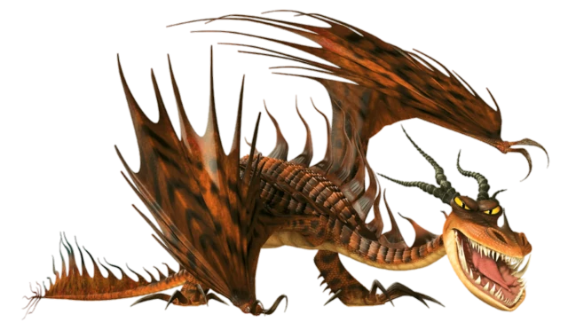

Pesadilla Monstruosa
Introduccion
Clase:Fogonero
Habilidad/es:Puede prender fuego a su cuerpo mediante un gel especial y crea ráfagas de viento con un choque de sus alas.
Hábitat:Bosques y volcanes.
¿Se puede entrenar? Sí
Ataque:15
Velocidad:16
Armadura:12
Poder de fuego:15
Limite de disparos:10
Veneno:0
Mandíbula:6
Sigilo:9
